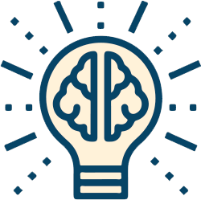

TÓPICO 3
DESENVOLVENDO O POTENCIAL DE LIDERANÇA
TÓPICO 3
DESENVOLVENDO O POTENCIAL DE LIDERANÇA
Clique nos elementos para conhecer os cinco pilares da inteligência emocional.
PARA REFLETIR
Nas atividades realizadas pelo Qualis APS, a empatia foi a inteligência emocional de destaque na fala dos gestores. Nessas atividades, os gestores se questionaram: “como dialogar”, “como escutar”, “como se colocar no lugar do outro" e "como entender o outro”.
E você, como trabalha a empatia na sua prática de gestão? Reflita e troque experiências com seus colegas sobre isso.
AUTOCONSCIÊNCIA
Autoconsciência corresponde à capacidade de se distanciar de um estado de espírito negativo.
Refere-se a agir de maneira neutra, mantendo a autorreflexividade mesmo diante de emoções turbulentas (GOLEMAN, 2012a).
AUTOGESTÃO
Autogestão representa a capacidade de preservar o autocontrole, de tolerar o turbilhão emocional, exercitar a temperança e a contenção de excessos.
Busca-se o equilíbrio e valoriza-se as emoções, cada sentimento possui sua devida importância.
Quando as emoções são suprimidas, podem gerar embotamento e, ao extrapolarem o controle, acabam tornando-se patológicas, a exemplo da depressão e da ansiedade (GOLEMAN, 2012a).
AUTOMOTIVAÇÃO
Automotivação consiste em usufruir a energia produzida pelas emoções para a obtenção dos objetivos pessoais.
A pessoa potencializa sua eficiência aprendendo a lidar com os percalços da vida.
Indivíduos motivados e que cultivam a esperança têm mais possibilidades de evitar distúrbios emocionais, ansiedade e depressão (GOLEMAN, 2012a).
EMPATIA
Empatia refere-se ao autoconhecimento.
Trata-se da capacidade de entender como o outro se sente: quanto mais as pessoas estiverem conscientes de suas emoções, mais facilmente compreenderão os sentimentos alheios.
As emoções raramente são expressas em palavras, por isso é imprescindível a interpretação de canais não verbais, observação do tom da voz, gestos, expressões faciais e corporais (GOLEMAN, 2012a).
Líderes que investem na empatia têm mais probabilidade de constituir conexões emocionais com sua equipe e costumam construir relações profissionais mediadas por laços de confiança (AMESTOY, 2020).
GERENCIAMENTO DE RELACIONAMENTOS
Gerenciamento de relacionamentos consiste na capacidade de gerir a emoção de outras pessoas.
É uma forma de inteligência social, regida por estabelecer ligações com outros indivíduos, interpretar reações e sentimentos, além de conduzir, organizar e controlar as disputas instauradas em qualquer atividade.
As pessoas com esse pilar desenvolvido possuem capacidade de liderança, expressando o sentimento coletivo, e conduzem a equipe ao alcance dos objetivos (GOLEMAN, 2012a).